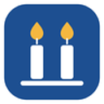
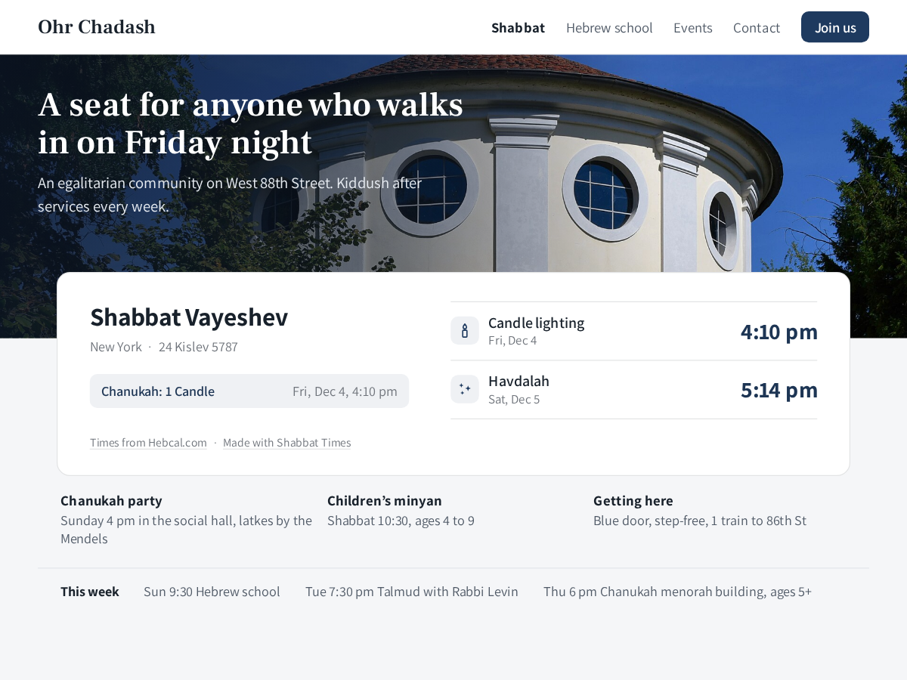

Shabbat Times
Candle lighting, parsha and your service times
- Candle lighting and havdalah for your city
- Parsha, Hebrew date and this week's holidays
- Your minutes before sunset and havdalah custom
- English or Hebrew, card or slim header bar

What it does
Most synagogue websites carry candle lighting times someone retypes every Thursday, or last month's PDF. Shabbat Times puts this week on your page and changes it by itself: the parsha, candle lighting on Friday, havdalah on Saturday night and today's Hebrew date, for your city. After havdalah it moves on to next week.
Holidays in the week show under the times, so on the first night of Chanukah visitors see when to light. Use the card on your home page or the slim bar in your header. Times come from Hebcal.com for your Business Info address or a city you pick. You set your community's own custom: 18, 20, 30 or 40 minutes before sunset, havdalah at nightfall or 42, 50 or 72 minutes after sunset, Sephardic or Ashkenazi names, English or Hebrew with right-to-left layout. Compare them once with your rabbi's calendar before you publish.
Free shows this week's times, parsha, Hebrew date and holidays for one place, with a small credit link. Premium adds your service times, worked out each week from candle lighting, sunset or a fixed time (Mincha 15 minutes before candle lighting), today's zmanim, the next holidays, a large-type layout for a lobby screen, and removes the credit link.
Price
Free
- This week's candle lighting and havdalah
- Parsha, Hebrew date and holidays
- Card or slim bar, English or Hebrew
- Small credit link
Premium
$5/month, $4/month billed yearly (20%)
- Service times from candle lighting or sunset
- Today's zmanim and the next holidays
- Large-type layout for a lobby screen
- Remove the credit link